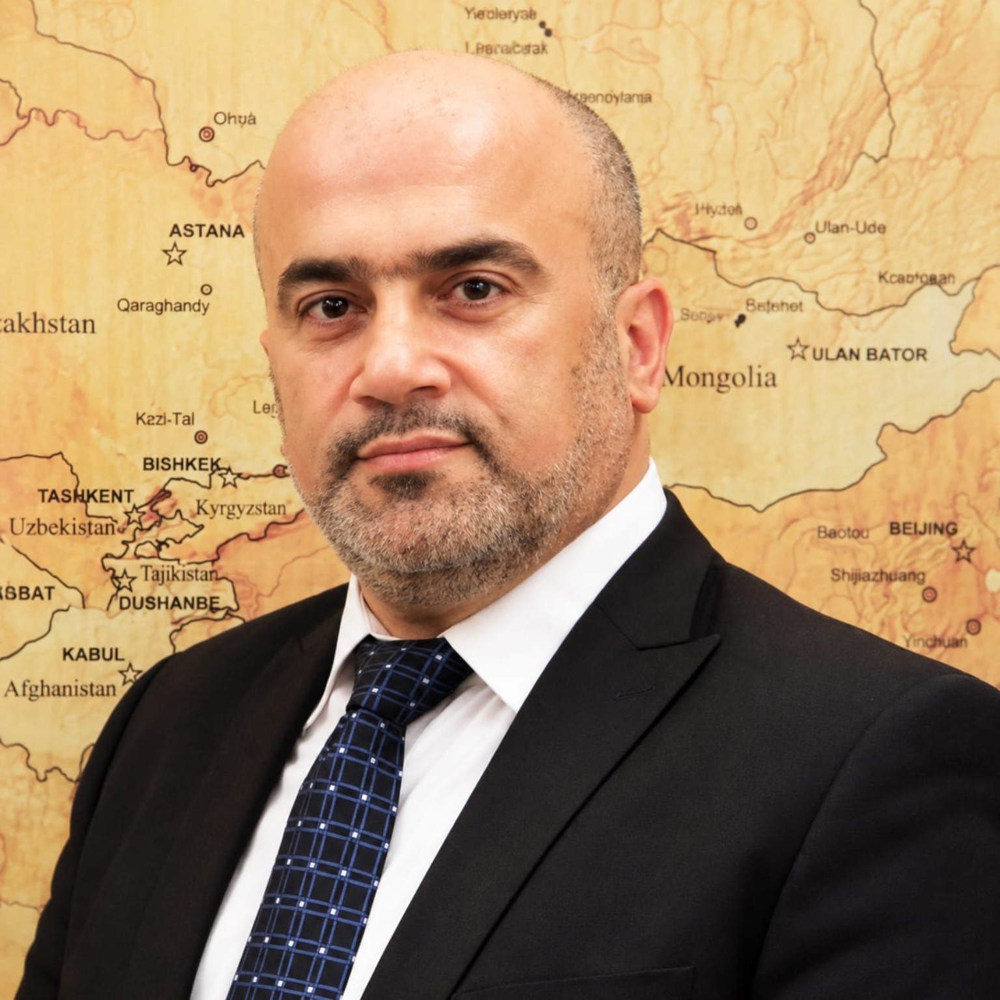

DIRECTOR · ACADEMIC & MEDIA LEADERSHIP
Dr Hala El Khatib
Media Street director; Lebanese University academic, journalist and television professional.
A MEDIA STREET INITIATIVE
Merit Way brings together selected professional learning, clear editorial guidance and media-led programme promotion.
THE PEOPLE BEHIND MERIT WAY
Merit Way is operated by Media Street S.A.R.L. and shaped by an experienced core team in higher education, communication and programme production.
Media Street director; Lebanese University academic, journalist and television professional.
Noursat Chief Executive Officer and Lebanese University academic with regional communication experience.

Regional media, production and project-development experience across Lebanon and the Gulf.
Professional backgrounds are stated for context and do not imply endorsement or partnership by current or former institutions.
TWO WAYS TO WORK WITH US
FOR LEARNERS
Explore selected professional programmes, compare options and use practical guides to choose a route that serves your next professional goal.
Explore selected programmes ↗FOR ORGANISATIONS
For training providers, universities, organisations and teams: promotional concepts, programme pages, campaign content and media production.
Explore what we create ↗WHAT WE CREATE
We focus on promotional and media work that makes a programme, initiative or learning offer easier to understand and easier to reach.
Programme pages, launch materials and audience-facing information that explains value, format and next steps.
Concept development, treatments, editorial framing and production-ready materials for educational and institutional stories.
Campaign messages, digital content and promotional assets for training, learning and public-facing initiatives.
SELECTED PROFESSIONAL PROGRAMMES
Explore practical, internationally recognised learning routes selected for professionals building their next capability.
Structured foundations for planning and delivery.
View programme ↗DATA & ANALYSISA practical route into data work and interpretation.
View programme ↗DIGITAL MARKETINGStrategy, campaign practice and performance basics.
View programme ↗Explore the programme, assess its fit and take the next step with confidence.
GUIDES FOR BETTER DECISIONS
START A CONVERSATION
Tell us what you are trying to learn, launch or communicate. We will identify the practical next step.
Contact Merit Way ↗mediastreet.sarl@gmail.comOperated by Media Street S.A.R.L. · Beirut, Lebanon